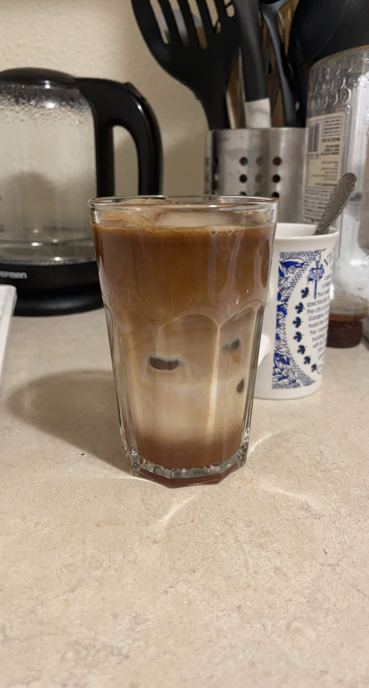

Honey Cinnamon Latte
This seasonal latte is perfect for a fall morning or afternoon to either kickstart your day or wind down
while watching the leaves fall. It might even be better than a pumpkin spice latte..
Ingredient List
- 2 spoons instant coffee
- Optional: 1 spoon sweetener of choice (I use sugar and can adjust to your liking)
- Hot water (see Instructions for amount)
- Milk of choice (see Instructions for amount)
- 1-2 spoons of honey
- Dash of cinnamon (Adjust to your liking)
- Optional: Ice
Instructions
Iced
Note: A latte has a 1:3 coffee to milk ratio!
- First, add the instant coffee to a heat resistant mug and start
boiling your water
- Then, add your choice of sweetener along with the coffee
- Grab another mug and add honey and cinnamon
- When the water is hot, pour the hot water into the coffee mug to about 1/3 of the way
- Pour hot water to the cup for the syrup about 1/3 of the way
- Stir the syrup and make sure the honey is dissolved (Taste and adjust to your liking)
- You could either stir with a spoon or be fancy and use a frother wand to make your
coffee mix look frothy
- Grab your favorite cup and pour the syrup
- Then get some ice and pour your choice of milk about 2/3 of the way
- Finally, grab the mug with your coffee and pour it over the milk
- Stir and enjoy!
Hot
- First, add the instant coffee to a heat resistant mug and start
boiling your water and heat up your milk of choice
- Then, add your choice of sweetener along with the coffee
- Grab another mug and add honey and cinnamon
- When the water is hot, pour the hot water into the mug to about 1/3 of the way
- Pour hot water to the cup for the syrup about 1/3 of the way
- Stir the syrup and make sure the honey is dissolved (Taste and adjust to your liking)
- You could either stir with a spoon or be fancy and use a frother wand to make your
coffee mix look frothy
- Pour the syrup into the warm/hot cup of milk and your coffee into the same mug
- Stir and enjoy!
My version
